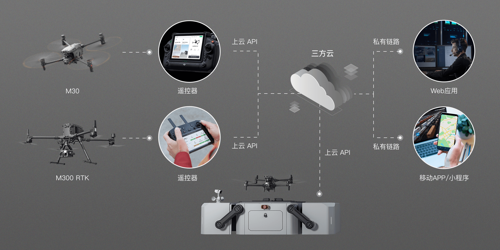
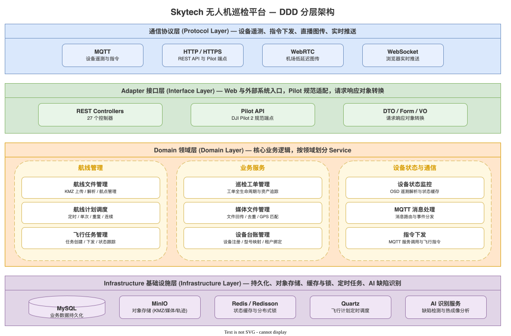
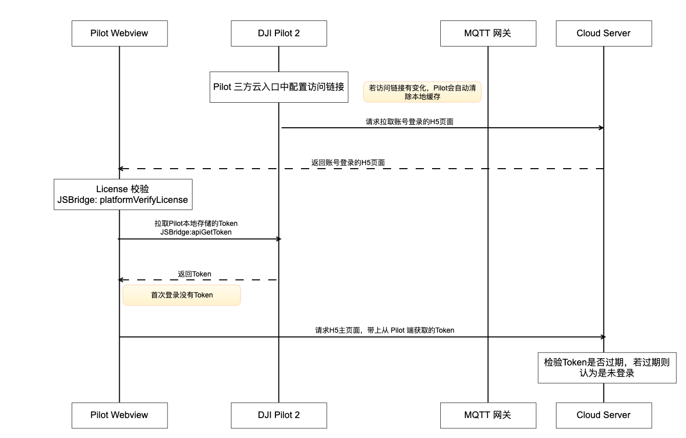
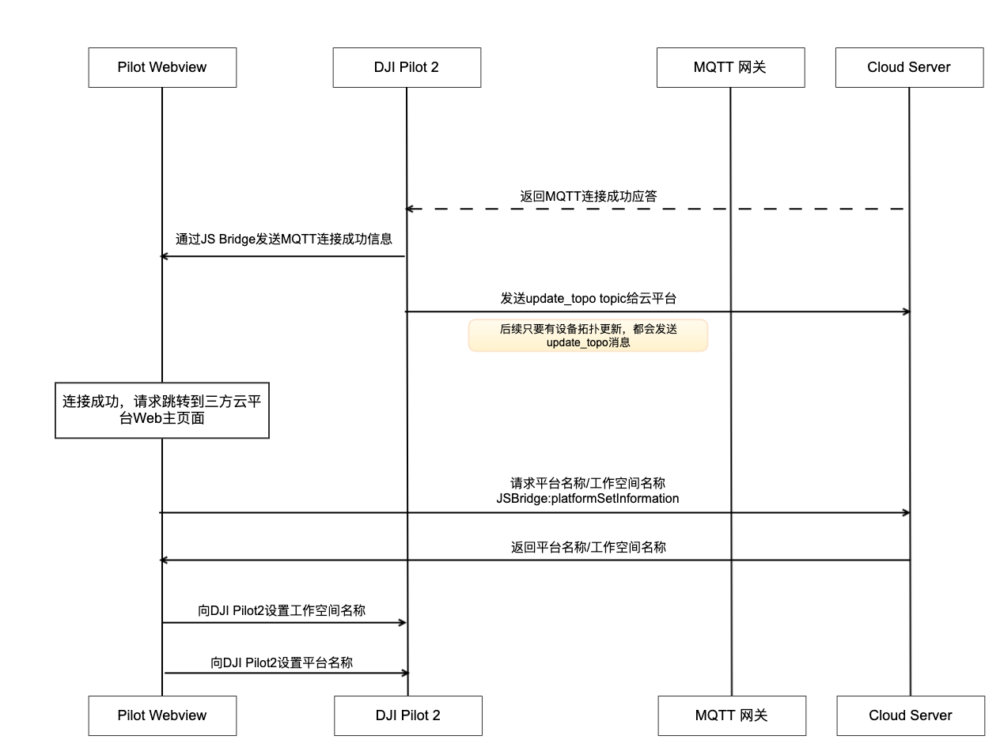
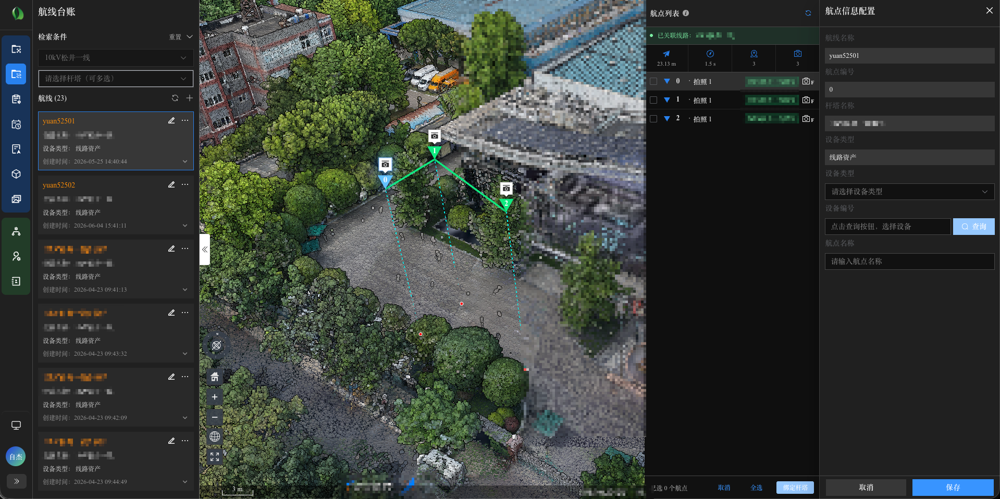
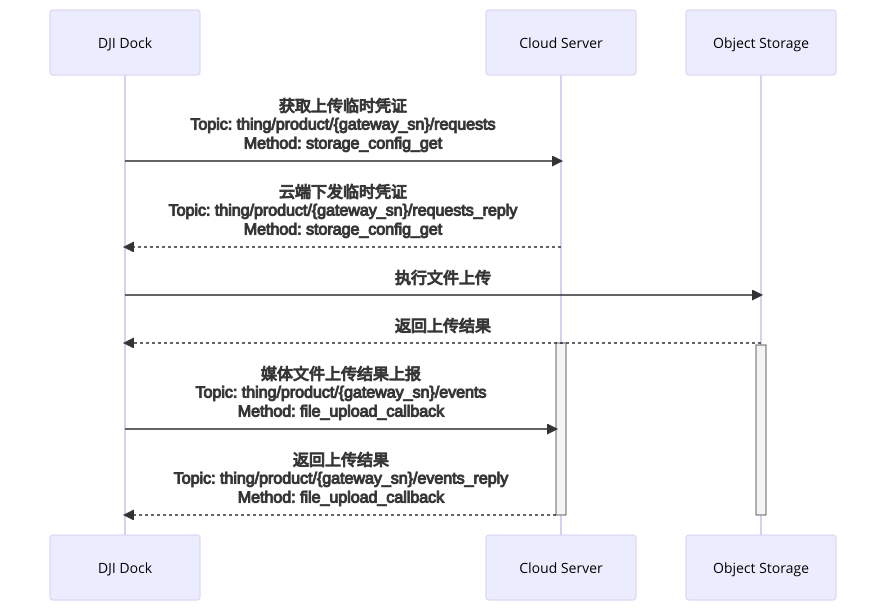
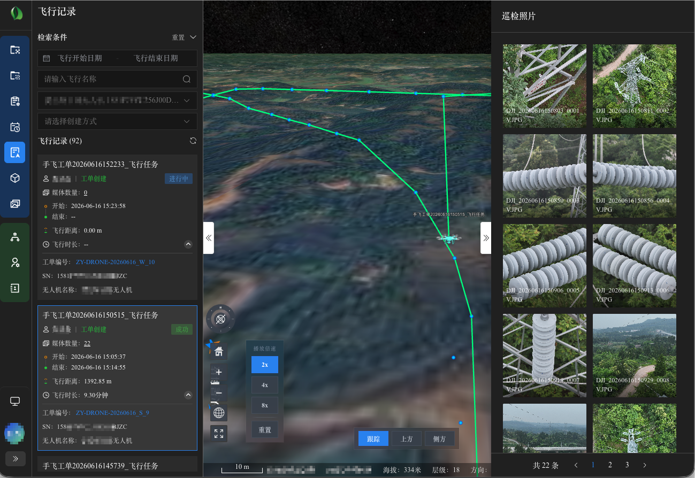
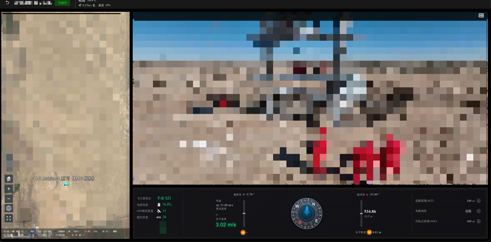
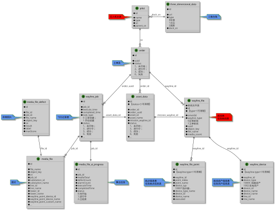

大疆无人机巡检平台技术架构与实践
大疆上云 API（DJI Cloud API）是大疆为行业无人机用户提供的一套云端接入方案，允许第三方平台通过 MQTT + HTTPS 双通道与 DJI 机场（Dock）、无人机及遥控器建立双向通信，实现设备管理、航线调度、实时图传和媒体回传等全套能力。
核心优势
设备可通过上云 API 直接与自建业务平台对接，无需经过大疆官方云平台（如 FlightHub 2）中转，
真正实现数据自主可控与业务深度定制。
-
大疆上云 API 架构概览
DJI 上云 API 定义了清晰的通信模型：

核心要点：
- MQTT 双向通道 ：机场/遥控器作为 MQTT Client 连接大疆 MQTT Broker，第三方平台同样以 MQTT Client 身份接入，双方通过不同 Topic 完成消息路由。
- HTTPS 辅助通道 ：用于大疆 Pilot 2 移动端 App 与第三方平台交互，例如获取航线列表、上传航线文件等。
- 设备模型 ：
- 机场（Dock）是网关设备，无人机作为其子设备挂载；
- 手柄（pilot）是网关设备，无人机作为其子设备挂载；
-
Skytech 平台分层架构
平台整体采用 DDD 分层架构，清晰划分职责边界：

平台自上而下分为四层：通信协议层负责与 DJI 设备建立 MQTT/HTTP/WebRTC/WebSocket 多通道连接；Adapter 接口层对外暴露 REST API 并适配 DJI Pilot 规范；Domain 领域层承载航线管理、巡检工单、设备监控等核心业务逻辑；Infrastructure 基础设施层提供 MySQL、MinIO、Redis、Quartz 及 AI 识别等底层支撑。
{kind=link}
{kind=link}
设备上云

首先搭建一个H5页面，集成大疆的 JSBridge。JSBridge可以让前端js获取到无人机的信息，通过JSBridge，Web端可以调用Native端的Java接口，同样Native端也可以通过JSBridge调用Web端的JavaScript接口，实现彼此的双向调用。
通过JSBridge, 平台可以设置无人机要连接到哪个MQTT服务，控制无人机开启直播、设置航线和照片的上传地址等
设备上线流程
设备开机并且连上MQTT后,会发送设备拓扑更新的消息，可以给首次接入平台的无人机实现注册功能。

关键设计点：
- 设备自动发现 ：设备上线后主动上报拓扑信息（ update_topo ），平台自动注册设备台账，无需手动录入。
- 型号映射 ：设备上报的 device_model_key 格式为 domain-type-subtype （如 0-67-0 ），平台通过字典表映射为可读设备型号名。
航线管理
DJI 使用 KMZ 格式（ZIP 压缩包）存储航线数据，内部结构：
航线名.kmz
└── wpmz/
├── template.kml # 模板层：飞行参数、安全配置
└── waylines.wpml # 航点层：坐标、动作、高度等
- template.kml ：定义无人机型号、负载型号、飞行速度、失控动作、返航高度等全局参数
- waylines.wpml ：定义航点列表，每个航点包含经纬度、飞行高度、飞行速度、云台姿态以及动作组（如到达航点后拍照、开始录像等）

- 航线来源 ：支持飞手在 DJI Pilot 2 上手动录制航线后通过手柄上传至平台，也支持平台端通过 KML 解析创建航线。
- 资产绑定 ：支持将航线与巡检资产（如杆塔、设备）绑定；创建工单时会将航线与资产信息嵌入每个拍照动作的 action name，DJI 飞控命名照片时自动带上此后缀，实现飞行照片到资产的精确追溯。
- 资产绑定 ：同塔双回线路，需要支持航点与不同线路的不同杆塔进行绑定
注意：一个航点可能存在多个拍照动作
航线计划与定时调度
航线计划定义了 何时 （cron 表达式或具体时间）、 用哪条航线 （waylineId）、 在哪个机场 （dockSn）执行自动飞行。
调度策略支持三种模式：
| 类型 | 场景 | 实现方式 |
|---|---|---|
| 立即执行 | 手动一键起飞 | 跳过 Quartz，直接创建 Job 并下发 MQTT |
| 单次定时 | 指定日期时间执行一次 | cron 表达式 “0 mm HH dd MM ? yyyy” |
| 重复定时 | 每周一/三/五 09:00 执行 | 根据 frequency + frequencyUnit 批量生成多条 sys_job |
机场工单
业务场景：机场飞行任务下发，巡检人员通过工单的方式下达定时巡检任务，需要选择巡检的航线，到达时间后机场自动起飞完成航线飞行。
- 查看航线管理文档,平台的实现是根据定时任务触发：1. 发送 flighttask_prepare , 2. 立即发送 flighttask_execute
- 两段式下发 ：先发送 flighttask_prepare （航线下载 URL 和飞行参数），再发送 flighttask_execute （仅含 flight_id ），符合 DJI 协议规范。
- 航线下载 ：设备通过 flighttask_resource_get 平台生成 MinIO 内部地址，机场主动拉取航线 URL。
- OSD 实时处理 ：FaUavStateService 解析 OSD JSON，分别处理机场和无人机遥测，支持 GPS 里程累积、起飞/降落状态识别。
手飞工单
业务场景：手飞工单，是指单兵带上手柄无人机去指定地点进行手动飞行。
- 开单：在系统中创建工单后，工单记录会同步到用户登录的手柄上。
- 到场机制：工单到场后，系统将以到场时间点为界，将该现场后续产生的飞行记录自动划归至本工单名下。

航线工单
业务场景：航线工单，是指单兵带上手柄无人机去指定地点进行航线飞行。一个工单可对应多个航线。
- 工单创建机制：系统在生成航线工单时，将自动复制原始航线，并在航线的每一个拍照点名称后追工单的编号，这一设计构建了全链路数据锚点：
- 原始照片的名称 ：DJI_20260617085553_0027_V.JPG, 0027 是拍照点的编号，一个航点有多次拍照，该编号也累加。
- 追加工单id+航线id后照片的名称：DJI_20260617085553_0027_V_SKY-2064625018897170434-2064625018926530562.JPG
- 照片回传：凭借拍照点名称中的工单编号，系统可自动识别并绑定所属工单；
- 飞行记录关联：通过照片的拍摄时间戳，与飞行日志进行时间轴匹配，完成飞行记录与工单关联；
- 资产挂载：每个工单对应航线的对应拍照点编号均预先绑定了对应的资产实体（如杆塔、绝缘子），因此照片在上传后即自动归属于具体资产。
- 最终效果：以此实现“工单 → 航线 → 飞行记录 → 照片 → 资产”的五维数据闭环，确保每一张巡检照片皆有源可溯、有物可依。
媒体上传与回调

- MinIO 直传 ：设备从 MinIO 获取 STS 临时凭证后直传照片，不经过应用服务器，降低带宽压力。
- 文件去重 ：支持 fast_upload （完整指纹）和 tiny_fingerprint （微型指纹预检）两种去重机制。
- AI 异步流水线 ：照片入库后异步提交 AI 检测，结果写入支持人工确认和误报标记。
小技巧：
图片与飞行记录的关联在大疆上云api中没有明确的字段进行关联
可通过飞行器的起飞降落时间与照片的拍摄时间来进行匹配
实时监控数据流

- 持久化通道 ：OSD 数据入库，Redis 缓存最新状态，支持历史回放。
- 实时通道 ：通过 WebSocket 直推浏览器，前端用在三维地图上实时渲染无人机位置和飞行轨迹。
正射影像
正射影像，就是将消除了变形的精确影像，它在普通图片文件里，通过专门的“GeoKeys”标签，嵌入了坐标系、地图投影、椭球体、基准面等全部地理参考信息。
大疆无人机可以拍摄正射影像通过框选区域生成拍摄航线后，通过 odm 软件将多张照片合并成一张正射影像照片。
docker pull opendronemap/odm
# 照片存储至 ~/Desktop/datasets/myproject/images
docker run -ti --rm -v ~/Desktop/datasets:/datasets opendronemap/odm --project-path /datasets myproject
点云模型
无人机点云模型，可以理解为无人机对现实世界进行的一次高精度“三维扫描”，其结果是一个由数百万甚至数十亿个带有三维坐标和颜色信息的数据点构成的、极其精细的三维立体模型。
通过大疆的激光雷达可以扫描出精确的点云模型。 点云瓦片的行业标准：3D Tiles 与 .pnts，点云模型瓦块化以后可以快速的在地图中加载渲染。
直播推流

平台主要使用两种直播协议：
| 协议 | 适用设备 | 特点 |
|---|---|---|
| WebRTC | 机场（Dock） | 低延迟，适合远程操控场景 |
| GB28181 | 手持遥控器 | 国标视频监控协议，对接视联网平台 |
流媒体一般使用ZLMediaKit：支持多种协议(RTSP/RTMP/HLS/HTTP-FLV/WebSocket-FLV/GB28181/HTTP-TS/WebSocket-TS/HTTP-fMP4/WebSocket-fMP4/MP4/WebRTC), 支持协议互转。
ZLMediaKit 中 webrtc 推流地址为: https://ip:8000/index/api/whip?app=rtps&stream=%s&sign="
播放地址可根据需要进行选择
核心表结构

其他问题
- 离线飞行记录：无人机整个飞行过程中断网，未形成有效的飞行记录。比如缺少结束时间，或者整个飞行记录缺失等情况如何处理？思路：可利用照片的数据，比如使用照片的位置做未轨迹，并计算时间+距离。
- 离线照片上传：飞手期望回到驻地后利用wifi来上传照片，可以在 JSBridge 中关闭照片的自动上传行为，但要求用户手动上传照片。